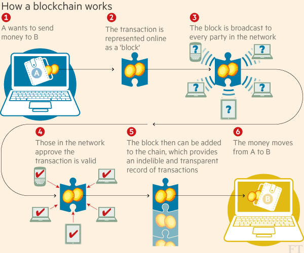

Blockchains
Mining is keeping track of transactions in a “blockchain”, a register that keeps track of all the transactions in the history of bitcoin. This blockchain is stored in computers that are part of the bitcoin mining network. The blockchain keeps track of every single bitcoin transaction that has ever happened. So far it houses over 107 gigabytes of data. This method is good for keeping track of the number of bitcoins there are but wouldn't guard against fraud. This is where mining comes into place. Miners run specific programs in their computer that verify bitcoin or any other cryptocurrency transactions. It is when you special algorithms (special math problems) to verify transactions between people. When a person mines he/she gets a little amount of bitcoin, this creates an incentive for people to get into the mining network. As miners verify transactions the more of them means a more secure network. The bitcoin network increases the difficulty of the algorithm as they are being solved faster and faster.As a lot of people are keeping track of the same thing the information is always accurate. For example, if one person tries to cheat the system and make him/her some money the others will remove that error and fix it with what they have. To make sure that people keeping the ledgers know you are sending bitcoin, you announce; your account number, the recipient’s account number and the amount of bitcoins.
